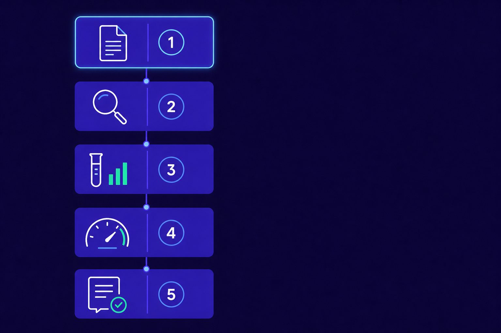
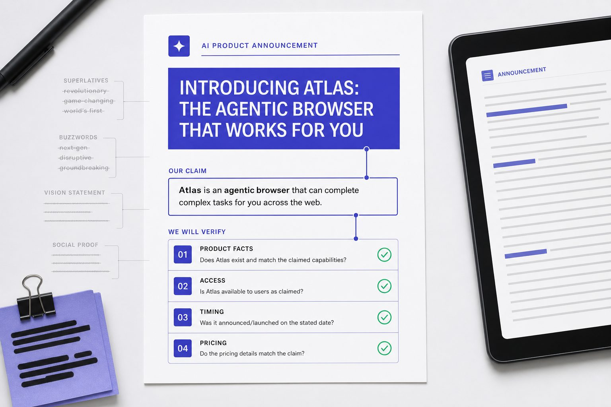
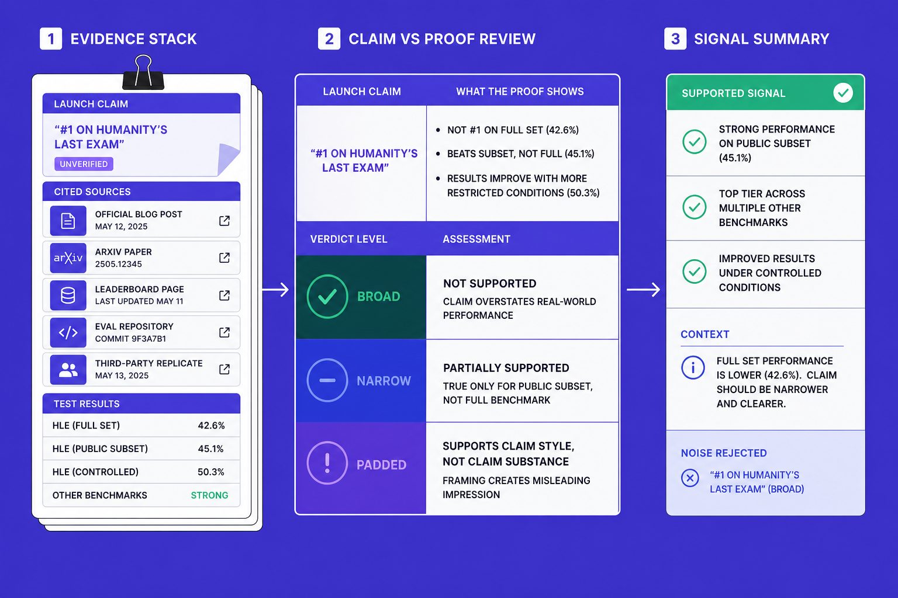
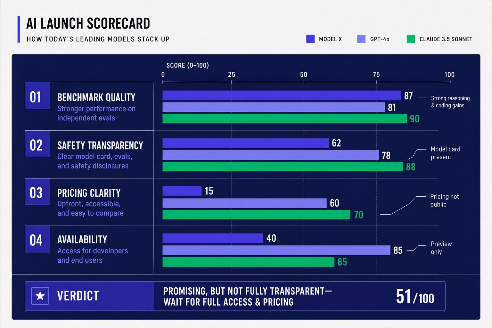

AI Guides
AI Benchmark Guide for Reading AI Launch Claims Fast
An AI benchmark can make almost any launch look historic. In plain terms, an AI benchmark is a test used to compare one model against another. That matters because most readers see the chart, demo, and headline first. They miss the missing context on test design, AI safety, AI pricing, and real availability. AI marketing expert Katie Hasty notes that zero-hype AI launches exist only in theory. Every announcement includes some level of promotional spin. This guide gives you a step by step way to judge any AI announcement fast. By the end, you will have a repeatable scorecard you can use in under 15 minutes.
Table of Contents
- Prerequisites for Evaluating Any AI Announcement
- Step 1 Read the AI Announcement Beyond the Headline
- Step 2 Audit the AI Benchmark for Evidence and Gaps
- Step 3 Verify AI Safety AI Pricing and Final Verdict
- Step 3 Verify AI Safety AI Pricing and Final Verdict
- Frequently Asked Questions
- Sources & Further Reading
Prerequisites for Evaluating Any AI Announcement

What you need before you start
Start by gathering primary sources before you judge an AI announcement. Open the official blog post, product page, pricing page, docs, benchmark appendix, and launch social posts in separate tabs. This step keeps you from relying on clipped screenshots or reposted summaries. For a broader method, review How to Evaluate New AI Models Without Getting Misled.
How to set up a simple launch review checklist
Create one note or sheet before you read. Add fields for AI benchmark, AI safety, AI pricing, access, and deployment limits. Then split the page into two columns: company claims on the left, verification notes on the right. For example, if a launch says “best coding model,” place that claim on the left, then log the cited test, baseline, and missing details on the right.
Next, work through the tabs in order.
1. Open the official post and copy each measurable claim.
2. Check the product page for feature limits and plan names.
3. Review docs for model versions, API access, and rate caps.
4. Scan the benchmark appendix for test names and omissions.
5. Read launch posts for extra claims not in formal materials.
You should now have one review sheet with every claim beside your notes.
What a completed setup should look like
Verify that your sheet shows source links for each claim. At this point, your setup is complete. You should have 8-12 specific claims extracted from official sources, each paired with a source URL in your verification column. You should also know whether the company published primary material - like a technical paper, API docs, or benchmark appendix - or only marketing summaries. If key details are missing at this stage, note those gaps. Missing documentation is itself a signal about launch readiness.
Step 1 Read the AI Announcement Beyond the Headline

Start with the core claim. That is your first check in any AI launch. Ignore the headline style words for a minute. Pull out the one thing the company wants you to believe, then turn it into a testable sentence tied to product facts, access, timing, and any stated AI pricing.
Separate the launch claim from the proof
Write down the claim in plain language. For example, a company may say its new system is the “best” coding model. That is not proof. It is a marketing label. Your job is to rewrite it as something you can test, such as: this model scores higher than named rivals on coding tasks and ships today through an API.
Highlight vague words as you read. Flag terms like best, fastest, frontier, state of the art, and enterprise ready. These words often signal that the company is selling a story before it shows evidence. That is also where an AI benchmark chart can mislead you, because a polished graph may hide narrow test conditions or missing comparisons. As Hasty warns, slick presentation often masks methodological weaknesses.
You should now have one short sentence that states the claim without hype. Verify that your sentence names a measurable outcome before you proceed.
Identify what was actually released
List the release type with exact words from the post. Is it a model, feature, API, preview, private beta, research paper, or limited demo? Companies often mix these together. For example, when Anthropic announced Claude 3 Opus, the headline emphasized 'available now,' but early access was limited to API users willing to pay premium rates. The model wasn't immediately available in the free tier that most users expected.
Next, note who can use it today. Check whether access is public, paid, invite only, region limited, or enterprise only. Then check when it starts. Look for hard dates, version numbers, rollout notes, and documentation links. If the post skips those details, treat the release as unproven until the company says more. If you want a broader review framework, see How to Evaluate New AI Models Without Getting Misled.
You should now see whether the company launched a real tool or only described one. Verify that you can label the release in one category before proceeding.
Flag missing details on access and timing
Scan for what is absent, not just what is present. Check for missing API docs, no pricing page, no release date, no regions, no rate limits, and no deployment path. Missing AI pricing matters because “available now” can still mean expensive, capped, or restricted to large accounts.
Marketing heavy launches often rely on broad claims and thin specifics. For example, if a post says a model is enterprise ready but gives no admin controls, uptime terms, or support scope, treat that phrase as incomplete. Research from Reporter’s Guide to Detecting AI-Generated Content - Global Investigative Journalism Network shows 8% in a different verification context, but the lesson still applies: small missing details can distort a much bigger conclusion.
At this point, your notes should tell you if the announcement describes a shipping product or a narrow preview wrapped in broad language. Verify that you can answer this question clearly: what exists now, who gets it, when it starts, and what proof supports the claim.
Step 2 Audit the AI Benchmark for Evidence and Gaps

In this step, you will test whether the benchmark evidence matches the launch claim. Your goal is to see whether the proof is broad, narrow, or padded. A strong AI benchmark supports the main promise. A weak one supports only a small slice.
Check what the benchmark actually measures
Start by naming the test before judging the chart.
1. Record the benchmark name exactly as shown.
2. Note the task type, such as coding, math, search, or agent use.
3. Write down the evaluation method, including scoring rules.
4. Check the sample size and test scope.
5. Mark whether results are third party or self reported.
A credible benchmark has clear rules, public methods, and repeatable scoring. It should test a task users actually care about. For example, a model may top a coding set but fail at long business workflows. That is still useful evidence, but it is narrow evidence.
Next, check access and version details.
1. Compare the tested model with the product users can access.
2. Look for words like preview, internal, research, or experimental.
3. Check whether the result applies to API users, app users, or neither.
4. Note any missing details on rate limits, context length, or tool access.
This matters because companies sometimes test an internal build, then market the shipping product with that result. The chart may be real, but the buyer cannot reproduce it. You should now have a clean note on what was tested, how it was tested, and who can verify it.
Verify that your notes include benchmark name, task type, method, sample size, and result source before proceeding.
Look for cherry picked comparisons and weak baselines
Audit the comparison set next. This is where many flashy claims get softer.
1. List every rival model shown in the chart.
2. Check each rival model’s release date.
3. Flag older versions used instead of current ones.
4. Note whether the company excluded strong rivals on key tasks.
5. Check whether only selective categories appear.
Yes, companies can cherry pick benchmark results. They can pick older rivals, private prompts, friendly tasks, or narrow slices where they already lead. For instance, a company might showcase coding performance on Python tasks while omitting JavaScript or TypeScript results where their model performs worse. Or they might compare against Claude 2.0 when Claude 3 has been available for months. Katie Hasty warns that polished agent marketing often hides the real test conditions behind attractive claims and demos Don't Get Fooled by AI Agent Marketing Hype | Katie Hasty posted on the topic | LinkedIn.
Then inspect the prompt and setup details.
1. Check whether prompts are public or hidden.
2. Look for custom scaffolding, tools, or retries.
3. Ask whether human intervention helped the model.
4. Flag hidden prompt injection defenses or routing tricks.
5. Note whether rivals got the same setup.
For example, think of a car race. One car runs on a flat track. Another pulls a trailer uphill. The winner tells you little unless the track was equal. The same logic applies to AI benchmarks. In 2024, some companies compared their latest models against GPT-3.5 instead of GPT-4, making their performance gains look more impressive. If one model gets custom prompts, extra tools, or multiple retries while rivals don't, the headline result becomes less reliable.
Research from Reporter’s Guide to Detecting AI-Generated Content - Global Investigative Journalism Network shows that only 7% of participants in one cited context identified AI generated material accurately. That does not prove benchmark fraud. It does show how easy it is to misread polished outputs without method details.
At this point, your notes should show whether the company proved leadership against strong rivals or built a favorable comparison frame.
Test whether benchmark wins matter in real use
Now connect the win to actual user outcomes.
1. Ask whether the benchmark matches the product’s main use case.
2. Check whether the test reflects latency, cost, and reliability.
3. Compare the win with published limits and AI pricing.
4. Review whether the result changes AI safety risk in practice.
5. Ask whether users can reproduce the outcome today.
A benchmark win matters only if it survives normal use. For example, a model may score well on short reasoning tasks but struggle with long support tickets, spreadsheet work, or browser actions. If the AI announcement promises enterprise workflows, then a tiny academic task is only partial evidence.
Use a simple label at the end.
1. Mark strong evidence if the test is public, relevant, current, and reproducible.
2. Mark partial evidence if the result supports one feature or one narrow task.
3. Mark weak evidence if methods are hidden, rivals are outdated, or access is unclear.
You should now be able to classify the evidence with confidence. Verify that your final label matches the notes, not the marketing. At this point, you should see whether the company proved broad performance leadership or only one benchmark win under favorable conditions. If you want a wider review framework, see How to Evaluate New AI Models Without Getting Misled.
Step 3 Verify AI Safety AI Pricing and Final Verdict

Benchmark scores tell only part of the story. A model can top every test and still fail in practice due to safety gaps, unclear pricing, or restricted access. In this final step, you move from analyzing performance to judging whether the release is actually usable and trustworthy.
Step 3 Verify AI Safety AI Pricing and Final Verdict
In this final step, you move from interest to judgment. A strong AI benchmark can still sit inside a weak launch. Your job now is to test whether the release is usable, accountable, and clear enough to trust in practice. That means checking what the company shipped, what it limited, what it disclosed, and what it left vague.
Start by reviewing the launch materials for real safety documentation. Look for a model card, system card, red-team summary, or risk disclosure. Check whether the company explains known failure modes, misuse risks, content limits, or monitoring controls.
Then inspect the safety claims themselves. If the announcement says the model is safer, more aligned, or enterprise ready, verify that those claims connect to concrete mitigations. Look for specifics like content filtering, access controls, policy enforcement, audit logs, or restricted capabilities. If the company offers slogans but no specifics, mark safety transparency as weak.
Next, test access and availability with the same discipline. Confirm whether the model is live today, limited to a preview, locked behind a waitlist, or available only to enterprise buyers. Check for region restrictions, usage caps, daily quotas, rate limits, and feature gaps between the public demo and the API. A launch can look broad in the headline while staying narrow in the product. If most users cannot access the release, treat availability as constrained, not general.
Then review AI pricing line by line. Check token prices, input and output rates, context window costs, and charges for tool use, retrieval, fine-tuning, hosting, or premium throughput. Look for hidden add-on costs that change the real buying decision. If pricing appears only in sales forms, custom plans, or unclear footnotes, do not fill in the blanks with optimistic assumptions. Classify the release as incomplete until the numbers are clear.
Once you finish those checks, assign the launch to one of three outcomes:
1. Mark it meaningful when the evidence is broad, safety disclosures are concrete, pricing is readable, and access is real.
2. Mark it overhyped when the headline runs ahead of the proof, especially if benchmark wins hide weak availability or thin safety support.
3. Mark it missing critical details when key facts on risk, cost, or access stay unclear after you review the official materials.
You should now have a verdict you can defend with evidence, not vibe. Your scorecard should show benchmark quality, safety transparency, pricing clarity, and availability status in one place. Verify that each category has a clear label before you proceed. At this point, your next move should also be obvious: wait for fuller disclosure, run a limited test, or ignore the launch until the company fills the gaps.
The bigger lesson is simple. A polished AI announcement can win attention fast, but trust comes from detail, not drama. When you check the AI benchmark, test AI safety claims, and read AI pricing with care, you stop reacting to marketing and start making informed calls. That habit helps you spot signal early and avoid wasting time on noise.
Keep the scorecard close, use it on every new release, and your verdicts will get sharper with each launch.
Want to learn more? Learn More to explore how we can help.